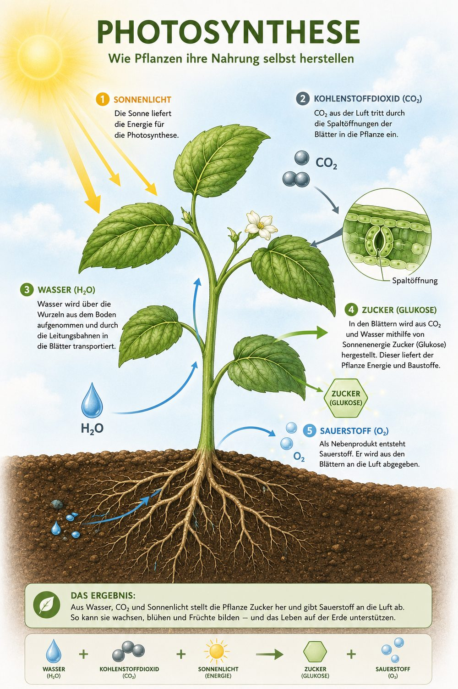

Pflanzen sind die Solarköche der Erde — sie verwandeln Licht in Leben.

👉 Aus Licht, Wasser und Kohlendioxid bauen Pflanzen Zucker – und geben dabei Sauerstoff ab. Diese Mahlzeit aus Sonnenlicht ist die Grundlage für fast alles Leben auf der Erde.
Tagsüber Solar-Küche, nachts Kraftwerk — Pflanzen sind echte Multitalente.

👉 Auch Pflanzen atmen: Sie verbrauchen Sauerstoff und gewinnen so Energie aus dem selbst gebauten Zucker – rund um die Uhr. Tagsüber überwiegt die Fotosynthese, nachts bleibt nur die Atmung.